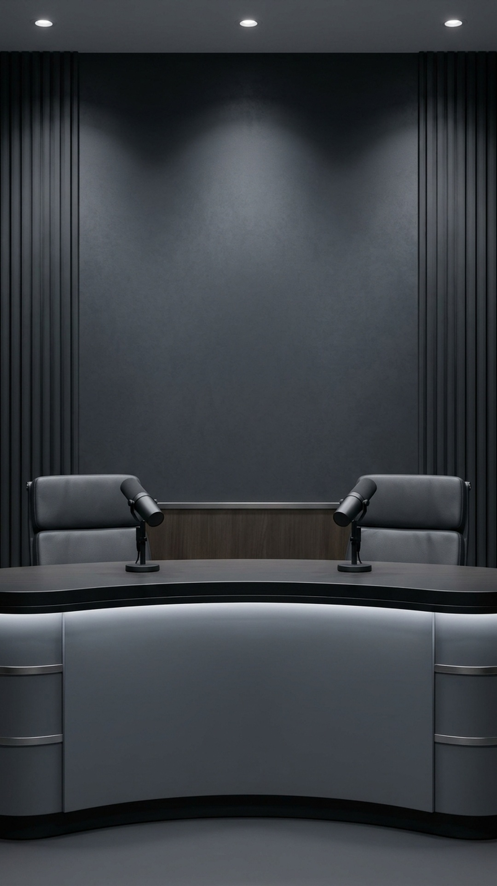
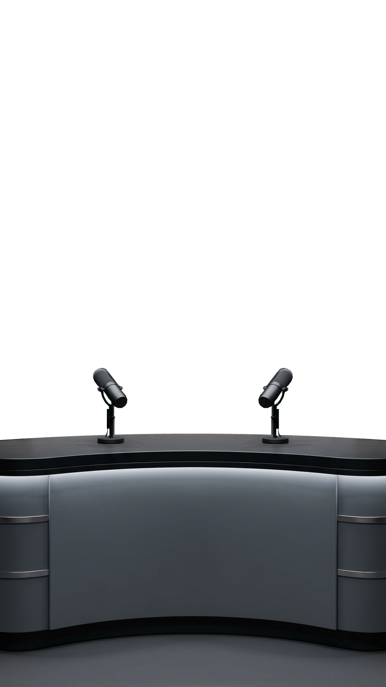
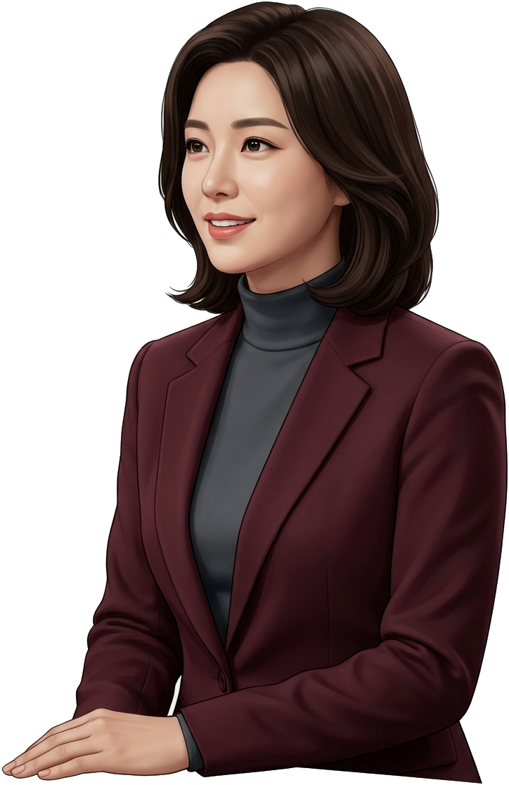

SRC
실측 527
|
샘플
댓글 200건 중 과열 58건(29.0%) 정제
샘플 채우기:
0줄 입력됨


1 / 6
0:00 / 0:56
심야 시간대 배달 오토바이 배기 소음 규제 및 단속 의무화 논란
규제 강화
논지 1/2
헌법상 주거 평온권 및 심야 수면권 침해 심각
새벽 시간대 주택가를 관통하는 불법 개조 오토바이의 폭발적인 배기음은 시민들의 수면 건강과 일상을 심각하게 파괴하고 있습니다.

규제 강화 88%
찬반 공론장 중재
신중·보완 12%
한냥 Studio
AI 음성 + 9:16 방송 영상 생성 중...
입력된 대본 길이에 맞춰 음성과 자막을 동기화하고 있습니다.
Space 재생 · ←/→ 턴 이동
찬반 공론장 중재
PERSPECTIVE RADAR
심야 시간대 배달 오토바이 배기 소음 규제 및 단속 의무화 논란
소제목·대사 클릭해 직접 수정 · 관점 변경 시 9:16 영상 색상이 자동 동기화됩니다
YOUTUBE DATA API V3 · TELEMETRY REPORT
실측 200건
심야 시간대 배달 오토바이 배기 소음 규제 및 단속 의무화 논란
공격성 댓글 정화
29.0%
(58/200)
정화 전 과열도
64.2
점
정화 후 논리성
85.5
(과열 14.5)
과열도 감소폭
-49.7pt
찬반 공론장 중재
원본 댓글 여론
편향된 원본 댓글 분포에서도 핵심 관점별 논거를 추출해 대본으로 균형을 맞춥니다.
정화 전 과열 표본
64.2 / 100
정화 후 대본 논리성
85.5 / 100
실측 댓글 527건 통계 차트
제안서 삽입용 고해상도 PNG 내보내기 지원
댓글 순화 전후 대조
클라우드 아카이브
업로드 메타 · 내보내기 탭에서 아카이브 저장을 누르면 Supabase에 기록됩니다.
구조화 JSON 출력